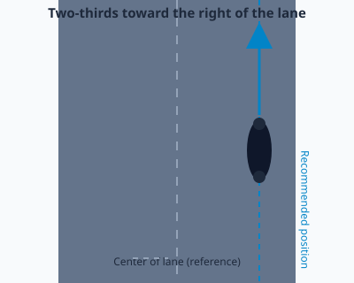
Lesson 24
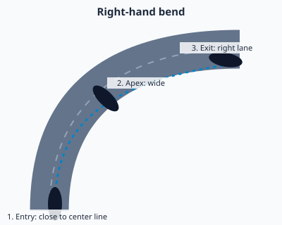
Lesson 25
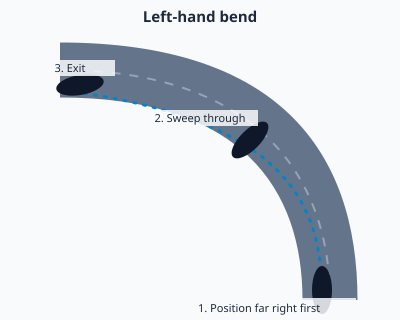
Lesson 25
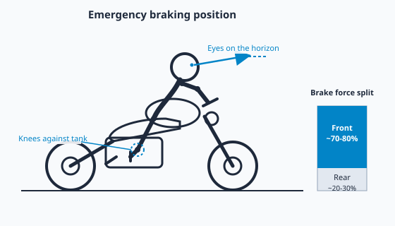
Lesson 25
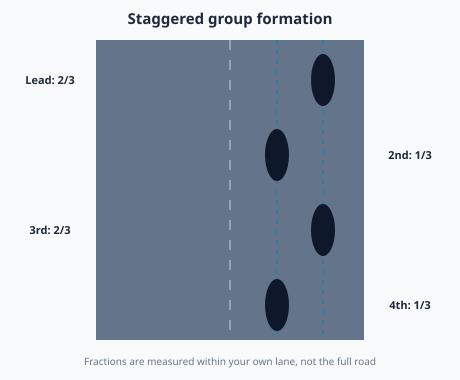
Lesson 24
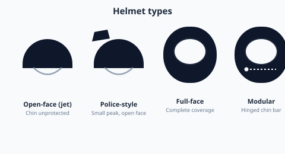
Lesson 3 — still flagged as needs work
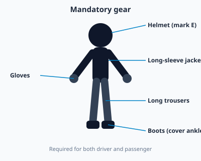
Lesson 3
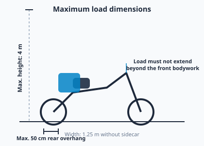
Lesson 6
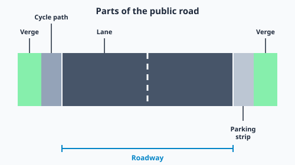
Lesson 7
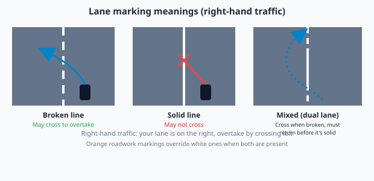
Lesson 8
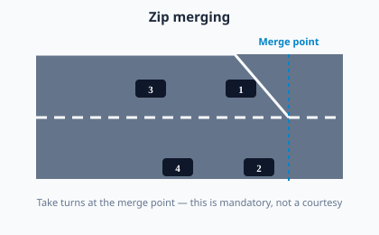
Lesson 8
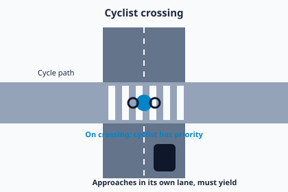
Lesson 9
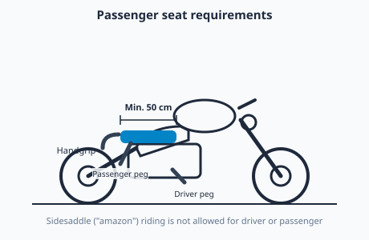
Lesson 13
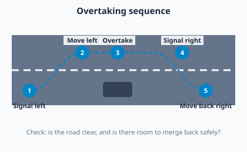
Lesson 15
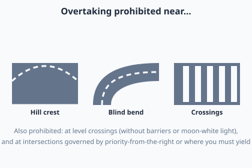
Lesson 16
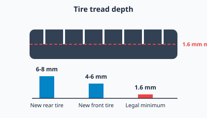
Lesson 28
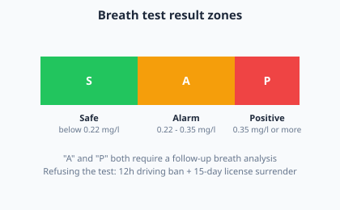
Lesson 29
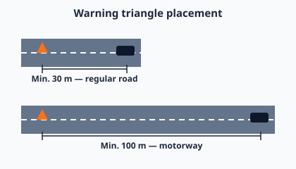
Lesson 30
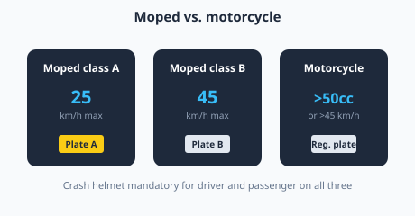
Lesson 2
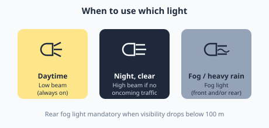
Lesson 4
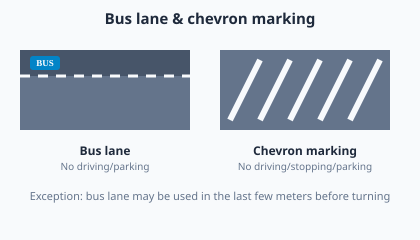
Lesson 8 (extra)
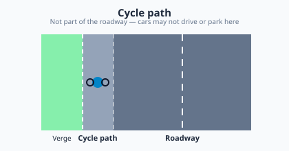
Lesson 9 (extra)
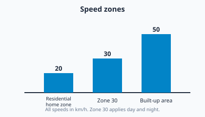
Lesson 10
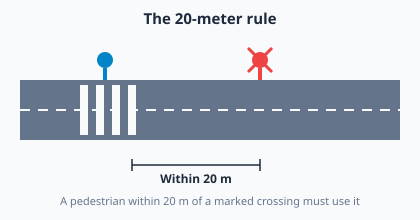
Lesson 11
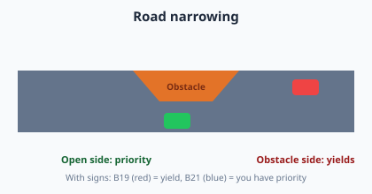
Lesson 14
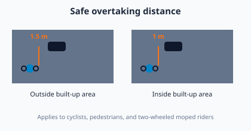
Lesson 15 (extra)
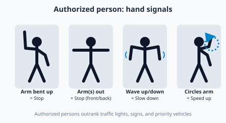
Lesson 17
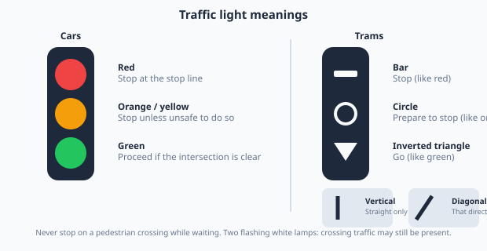
Lesson 18
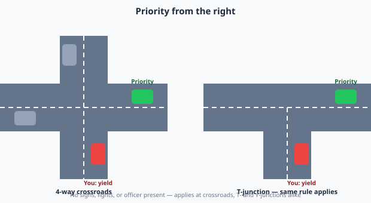
Lesson 20
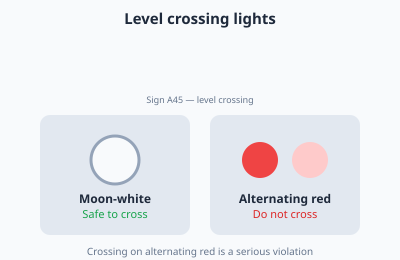
Lesson 22
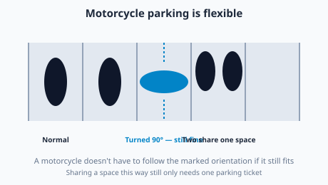
Lesson 26
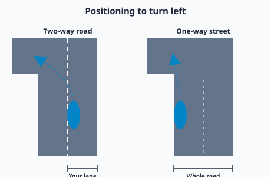
Lesson 27
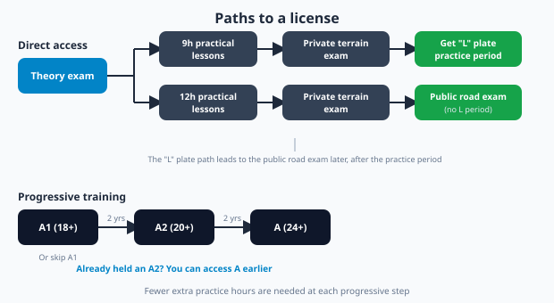
Lesson 1
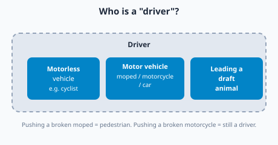
Lesson 12
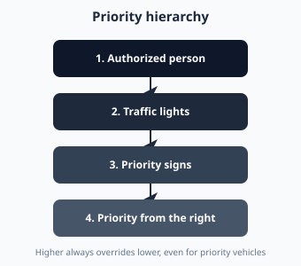
Lessons 17-19
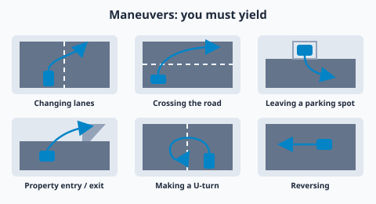
Lesson 21
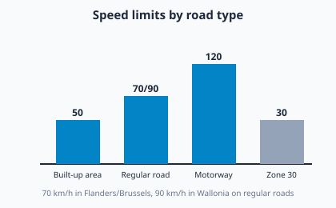
Lesson 23
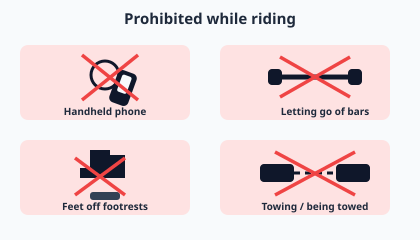
Lesson 31
Lesson 19 (priority sign meanings) is covered by the actual sign icons in assets/signs/ rather than a separate diagram, since that's literally what those icons already show.